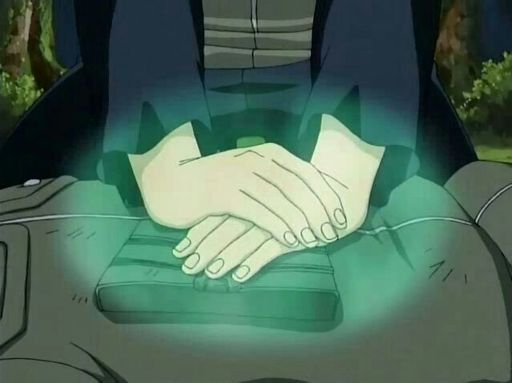
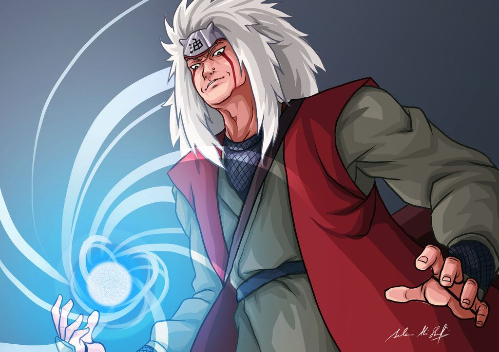
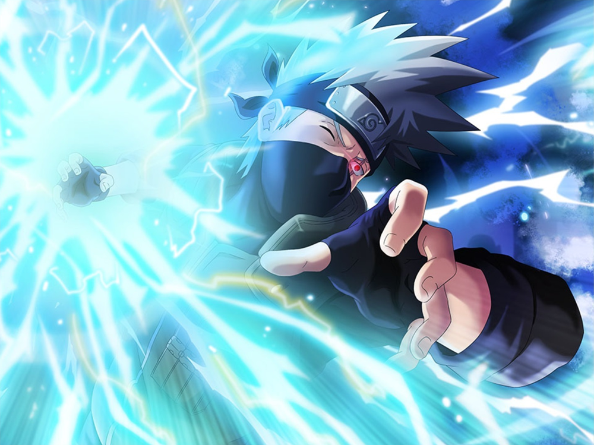

Para se tornar um grande ninja é necessário dominar vários jutsus. Escolha qual será a primeira habilidade que seu personagem deve aprimorar
Ninjutsu de cura.
Habilidade capaz de salvar a vida de seus aliados
Rasengan
Jutsu extremamente poderoso que consiste em chakra rotativo na palma da mão do usuário.
Chidori
Também chamado de "Espada Relâmpago", esse é um poderoso jutsu quando completamente dominado.